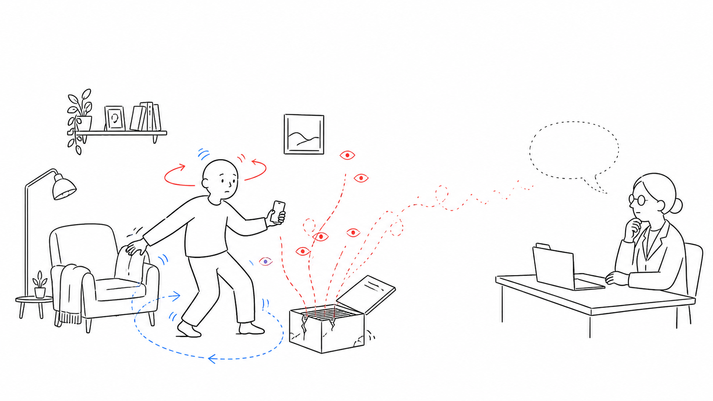
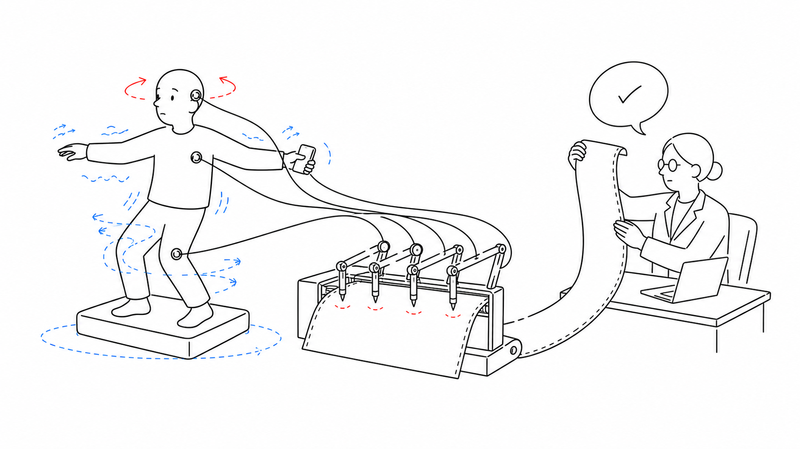
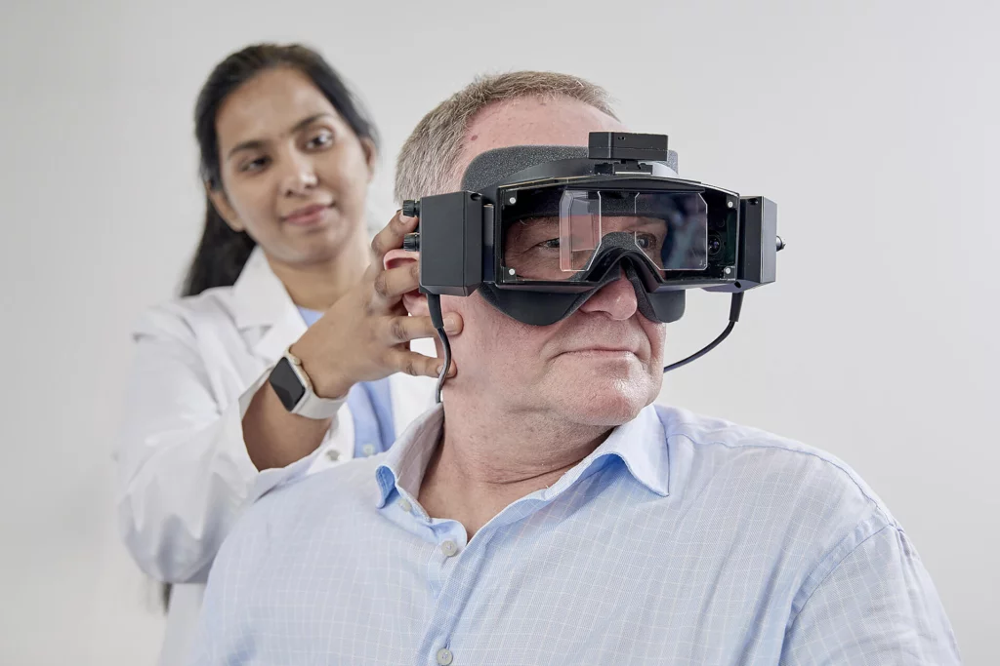
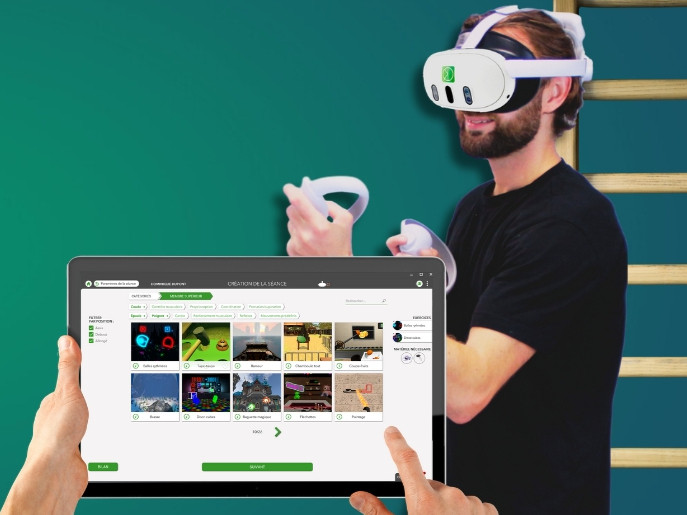
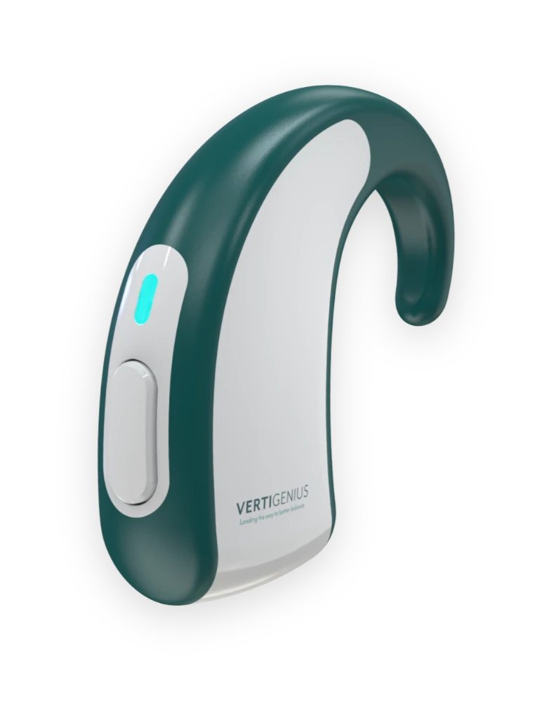
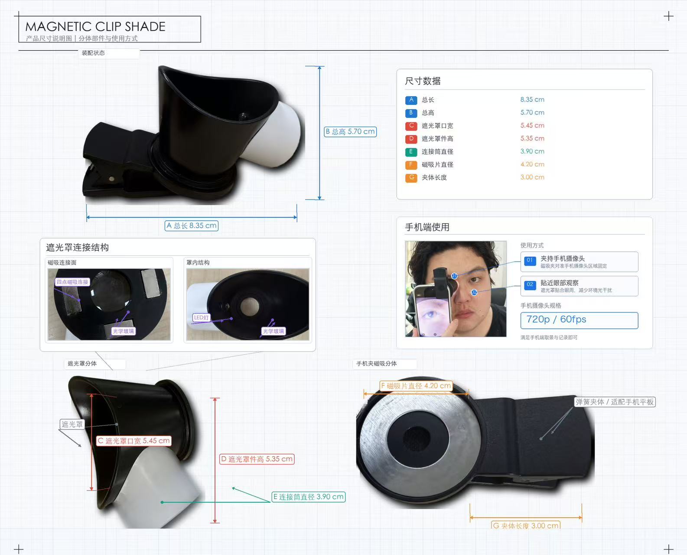
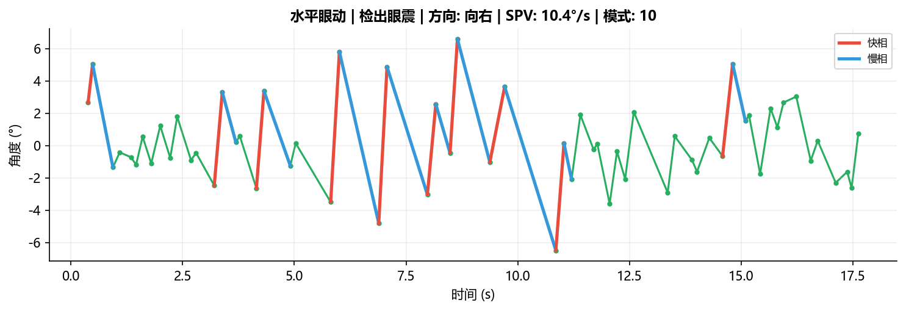
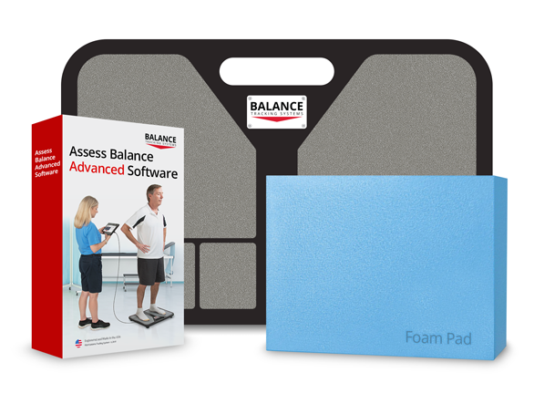

/ 100experienced dizziness in the past month
VERTIWISDOMHKSTP INCU-BIO APPLICATION · 2026
Dizziness detection and rehabilitation, from specialist care to community and home
Home detection × functional balance assessment × personalised rehabilitation
01BACKGROUND
02THE NEED
03PRODUCT
04PATHWAY
05MARKET
VERTIWISDOMHKSTP INCU-BIO APPLICATION · 2026
Dizziness begins as a common symptom—and often becomes long-term care
Behind a common symptom lie impaired balance and chronic progression.
01
SECTION THESIS
Impaired balance raises fall risk; persistent symptoms turn a single visit into long-term care.
01Population burden02Balance and falls03Chronic progression
VERTIWISDOMHKSTP INCU-BIO APPLICATION · 2026
Dizziness is common: for some the world spins; for others it never quite stops
Among these 23 people
/ 100experienced spinning vertigo29% of those with dizziness
/ 100had persistent dizzinessRecent estimate: about 4.2 / 1003
23 people recent dizzinessabout 7 vertigoabout 4 persistent77 people no reported dizziness
Episodes are brief; long-term management happens in community care and at home.
VERTIWISDOMHKSTP INCU-BIO APPLICATION · 2026
Among 805,454 patients with dizziness, only 6% entered physical therapy within three months
805,4541newly diagnosed patients with
dizziness or vestibular disordersAges 18–87 · US insurance claims cohort
dizziness or vestibular disordersAges 18–87 · US insurance claims cohort
Index visitINDEX VISIT
Access to rehabilitation remains narrow while fall risk persists.
VERTIWISDOMHKSTP INCU-BIO APPLICATION · 2026
More than half of people with dizziness also feel unsteady when standing
n = 480 · RECENT DIZZINESS>50%1also reported
also reported
postural unsteadiness
Dizziness with postural unsteadinessOther participants with dizziness
Balance links subjective symptoms to everyday function.
VERTIWISDOMHKSTP INCU-BIO APPLICATION · 2026
Dizziness plus abnormal balance testing is associated with 12× higher odds of falling
12×1falling odds association
1×
12×
35.4%1of adults aged 40+
had abnormal balance testingmodified Romberg
had abnormal balance testingmodified Romberg
Abnormal balance is a functional signal of fall risk.
VERTIWISDOMHKSTP INCU-BIO APPLICATION · 2026
About 25% of acute vestibular patients progress to chronic dizziness
100 PATIENTS · ACUTE OR EPISODIC VESTIBULAR DISORDERS
Vestibular neuritisMénière’s diseaseVestibular migraineBPPV
100acute vestibular patients
3–12 months
≈251progress to chronic dizziness
After the acute episode subsides, dizziness, unsteadiness and visual sensitivity may persist for months.
These patients require continued assessment and rehabilitation.
About one in four requires ongoing management.
VERTIWISDOMHKSTP INCU-BIO APPLICATION · 2026
The condition continues at home; the evidence stops at the clinic
Episodes are hard to review; home rehabilitation is hard to quantify.
02
SECTION THESIS
Chronic management happens outside the clinic, while objective evidence remains inside it.
01Episodes cannot be reviewed02Rehabilitation is not quantified03Evidence is missing outside the clinic
VERTIWISDOMHKSTP INCU-BIO APPLICATION · 2026
Episodes happen at home; rehabilitation disappears between visits
01 · DURING AN EPISODEThe episode ends.
The episode ends.
So does the evidence.

No episode recordEye, head and postural changes
02 · DURING REHABILITATIONThe training is completed.
The training is completed.
The effect is not measured.

No objective evidenceDose, movement quality and balance change
Without continuous objective data, episodes cannot be reviewed and rehabilitation cannot be adjusted.
VERTIWISDOMHKSTP INCU-BIO APPLICATION · 2026
Professional testing remains clinic-bound; home rehabilitation still relies largely on self-report
01 · IN CLINIC
TestingVNG / vHIT

Quantifies eye movement and vestibular reflexesAn objective measurement at one clinical visit
02 · IN CLINIC
RehabilitationCDP / force plate / VR

Assesses balance and defines the programmeObjective and controlled, but dependent on equipment and therapists
03 · AT HOME
RehabilitationSelf-directed training
Exercise demonstration→Self-directed training→Self-report at follow-up

A few systems record head motion and completionMovement quality and balance change are rarely tracked continuously
Testing Testing completed in clinicRehabilitation In-clinic assessment and prescription → home training → follow-up feedback
Between discharge and follow-up, training lacks an objective record.
VERTIWISDOMHKSTP INCU-BIO APPLICATION · 2026
Turn episodes and training at home into clinical evidence
Capture brief episodes; quantify sustained rehabilitation.
03
SECTION THESIS
Home episode capture and quantified rehabilitation share one VertiWisdom data pathway.
01Product answer02Home detection03Home rehabilitation
VERTIWISDOMHKSTP INCU-BIO APPLICATION · 2026
VertiWisdom captures the two forms of evidence missing at home
The episode leaves no record
Brief episode→Home episode capture→Reviewable evidence
Video captures eye and head movement at the moment of an episode.
Rehabilitation is not objectively measured
Home training→Quantified home rehabilitation→Comparable change
Records dose, movement quality and balance change.
VERTIWISDOMTwo capabilities, one home-data pathway
Capture episodes. Quantify rehabilitation.
VERTIWISDOMHKSTP INCU-BIO APPLICATION · 2026
Home detection: turn a brief episode into a reviewable record
Smartphone + magnetic light shield

Horizontal nystagmus detected
- Direction
- Right-beating
- SPV
- 10.4°/s
- Patterns
- 10
- Valid frames
- 1,941


One episode video preserves the eye-region image together with horizontal and vertical eye traces.
VERTIWISDOMHKSTP INCU-BIO APPLICATION · 2026
Home rehabilitation: bring eye, head and trunk measurement into the home
TODAY · IN CLINIC
Professional systems perform the measurement

Portable
measurement→
measurement→
VERTIWISDOM · AT HOME
Three portable signals capture a complete training session
Home training
Repetitions · duration · completion
Sway · turning · stability
One session records dose, movement quality and balance change.
VERTIWISDOMHKSTP INCU-BIO APPLICATION · 2026
From home training to the next prescription
Continuous records of symptoms, training and balance inform follow-up and prescription adjustment.
04
SECTION THESIS
Home-training records directly inform the next prescription.
01Training dose02Remote evidence03Clinical adjustment
VERTIWISDOMHKSTP INCU-BIO APPLICATION · 2026
Most training happens at home; the remote rehabilitation group still had milder dizziness at six months
20minutes / day1for 4–6 weeks
Clinic
Assessment and prescription→Home
Completes the main training dose
Assessment and prescription→Home
Completes the main training dose
Compared with usual care,
the remote rehabilitation group had milder dizziness2
VSS-SF symptom scoreLower scores mean milder dizziness
012345
3-month follow-up
2.75 points lowervs usual care · 95% CI 1.39–4.12
6-month follow-up
2.26 points lowervs usual care · 95% CI 0.39–4.12
The clinic assesses and prescribes; training happens at home; follow-up compares the record.
VERTIWISDOMHKSTP INCU-BIO APPLICATION · 2026
Symptoms, training and balance converge to inform the next prescription
→
CLINICAL REVIEW
Next-stage prescription
WhatHow muchWhen to reassess
Clinical reviewFollow-up compares three trajectories: symptoms, training and balance.
VERTIWISDOMHKSTP INCU-BIO APPLICATION · 2026
From one vertigo centre to a community-care network
Specialist centres assess and prescribe; training happens at home; community providers follow up.
05
SECTION THESIS
A centre anchors the service unit; community nodes form the regional network.
01Centre model02Community nodes03Patient reach
VERTIWISDOMHKSTP INCU-BIO APPLICATION · 2026
100 patients per month create RMB 2.30–2.88m in annual service volume
60patients / month×800RMB / patient×12months
0.576RMB million / year
40patients / month×3,600–4,800RMB / course×12months
1.73–2.30RMB million / year
Patient volume is based on follow-up data from Zhejiang Provincial People’s Hospital Vertigo Centre.
VERTIWISDOMHKSTP INCU-BIO APPLICATION · 2026
A near-term RMB 2.4–3.2bn market across about 3,300 care nodes
Specialist centres prescribe; community providers deliver
Tertiary hospitals4,111 nationwide
600–80015%–19% coverageCommunity health centres10,228 nationwide
1,02310% connectedTownship health centres33,334 nationwide
1,6675% connectedCare network3,290–3,490institutional nodes
600–800×100×12
specialist centres × new patients / month × 12720k–960k patients / year1,023+1,667
community + township health centres2,690 community-care nodesSpecialist assessment and prescription→Training completed at home→Community retraining and follow-up
Specialist centres create an annual entry point for 720k–960k patients; community providers deliver retraining and long-term follow-up.